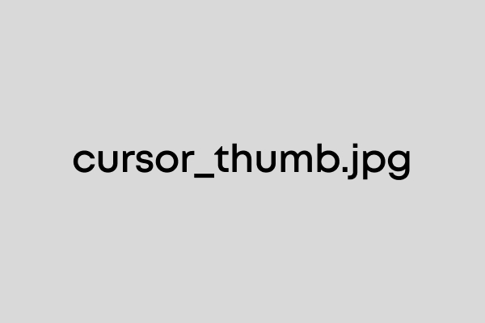
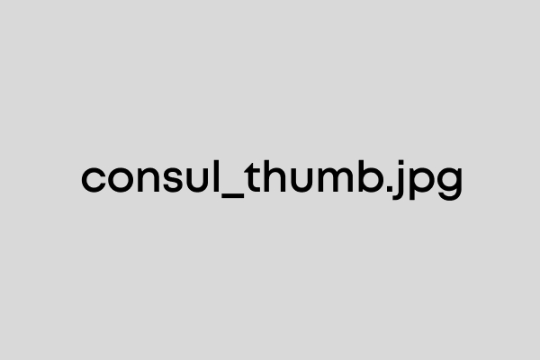
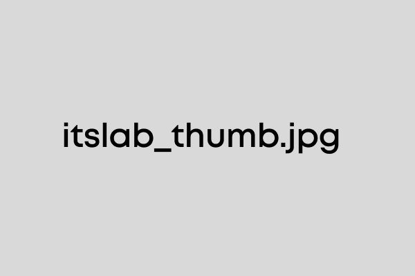
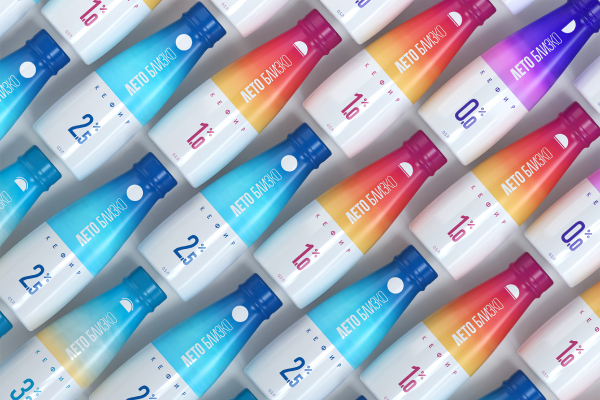

Senior Product Designer
Senior Product Designer с 15-летним опытом. Превращаю сложную бизнес-логику в интуитивные интерфейсы. Специализация: SaaS, IoT, Data Viz, Design Systems.

UX/UI / Enterprise
Курсор
Интеллектуальный поиск и управление знаниями. Коробочное решение для Газпром Нефть и Полюс Золото.

UX/UI / SaaS
Consul
Платформа для анализа рисков и комплаенса. Bring Your Own Data концепция.

UX/UI / Smart City
ITSLAB
Интерфейс управления умными светофорами и аналитика городского трафика в реальном времени.

Graphic Design / 3D
РА Гордость: Брендинг
Кейсы: Lammerum, Лето Близко, Ambassador, GGG, План Б. Полный цикл.

Industrial Design
Промышленный дизайн
Личные проекты: поиск формы, скетчинг и 3D моделирование объектов.
Другие проекты
- • Курсор 2.0 (Redesign)
- • ЕРОТ (Минцифры)
- • Демо-стенд «Сравнитель»
- • Contract (Siemens/Sibur)
- • ЦНМД и СЭД (Газпром Нефть)
- • РФФИ Граф